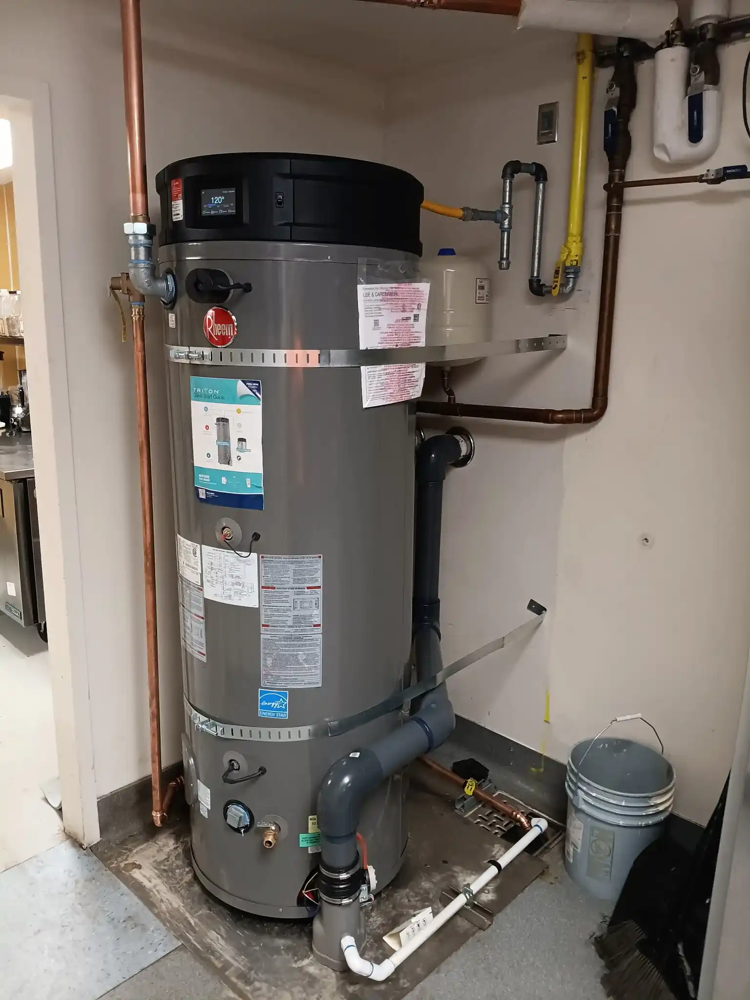
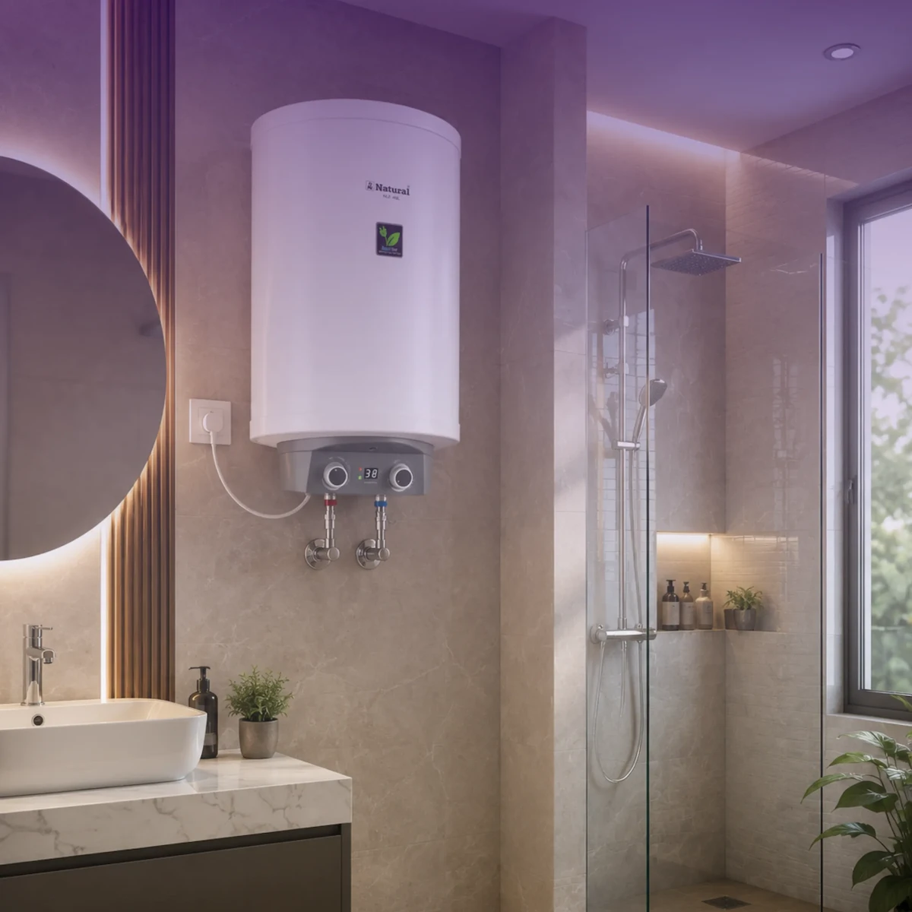

Water Heater Repair & Replacement in Central Nampa, ID
Central Nampa stretches across the heart of the city, encompassing the residential neighborhoods between the downtown core and the newer developments further out. The housing stock here is predominantly mid-century—homes built from the 1950s through the early 1980s—with a significant proportion of rental properties and multi-family units that change ownership and management frequently.
This creates a specific pattern of water heater neglect: units that have been in service for 12–15 years without a single maintenance visit, in homes where the previous owner or tenant never flagged a problem until the tank failed completely. We see more "the water heater just stopped working" calls from Central Nampa than anywhere else in the city—because the units here have often been running on borrowed time.

The Central Nampa Water Heater Landscape
Rental Property and Multi-Family Service
A significant portion of Central Nampa's housing stock is rental property—single-family rentals, duplexes, and small apartment buildings. Water heater failures in rental properties carry a different urgency than owner-occupied homes: tenants need hot water restored quickly, landlords need documentation of the work performed, and the repair-or-replace decision often has to be made with an eye toward the property's long-term maintenance budget.
We work with both individual landlords and property management companies in Central Nampa. We provide clear written documentation of all work performed, which is important for both tenant communication and property records.
Outdated Units That Were Never Replaced
The 1960s and 1970s homes in Central Nampa often still have water heaters that were installed during a previous renovation—units that are 15–20 years old and operating well past their expected lifespan. These units may still be producing hot water, but they're doing so inefficiently, and they're one hard-water mineral deposit or corroded connection away from a complete failure.
If you're in a Central Nampa home and don't know when your water heater was last replaced, that's worth finding out. A unit that's been running for 12+ years in Nampa's hard water conditions should be evaluated for replacement, even if it hasn't failed yet.
Hard Water and Sediment in Central Nampa
Like all of Nampa, Central Nampa draws from Canyon County's water supply—hard-water conditions. For homes in this area that have never had a water softener, sediment accumulation in the water heater tank is essentially guaranteed. The rumbling and banging sounds that Central Nampa homeowners often describe as "the water heater making noise" are almost always sediment being superheated at the bottom of the tank.
A sediment flush can restore efficiency and extend the unit's life if the tank hasn't been compromised. If the sediment has been there long enough to cause corrosion, replacement is the better path. We'll assess honestly which situation you're in.
Services Available in Central Nampa (ZIP 83651)
- Water heater repair — gas and electric, same-day availability
- Sediment flush and hard water maintenance — essential for Central Nampa's older units
- Full water heater replacement — including rental property service
- Rental property water heater service — documentation provided, fast turnaround
- Unit age assessment — honest evaluation of repair vs. replace for older units
- Heating element and thermostat replacement — common in electric units throughout this area
Neighborhoods in Central Nampa We Serve
Our Central Nampa service area includes the residential neighborhoods along Garrity Boulevard, the Midland Boulevard corridor, the areas surrounding Nampa High School and Skyview High School, and the established neighborhoods between 12th Avenue and the Nampa-Caldwell Boulevard. We also serve the Westview, Sundance, and Franklin Village subdivisions within Central Nampa.
Other Areas We Serve Near Central Nampa
We also provide water heater service throughout Downtown Nampa and South Nampa. For a full list of neighborhoods served, see our service area overview.

Central Nampa Water Heater FAQs
Sediment buildup from hard water is the most common issue we see in Central Nampa, alongside aging units approaching the end of their service life in the neighborhood's older housing stock. High rental density in parts of Central Nampa also means units that haven't had consistent maintenance under multiple ownership changes.
Yes. We evaluate every Central Nampa service call for repair-vs-replace value first, and handle whichever makes better financial sense for your specific unit's age and condition.
Central Nampa is in ZIP code 83651.
Central Nampa draws from the same Canyon County water supply as the rest of the city, and local hard-water conditions accelerate sediment buildup and mineral scale inside both tank and tankless units. Annual flushing is our standard recommendation for Central Nampa homeowners without a water softener.